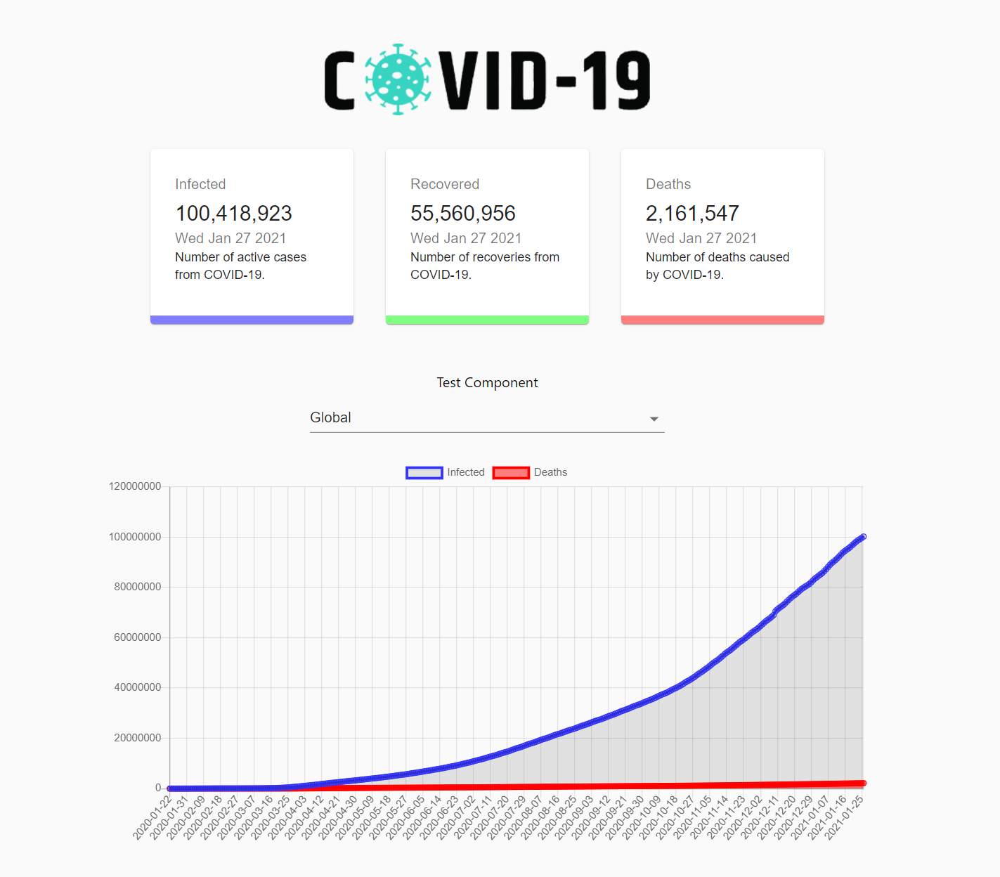
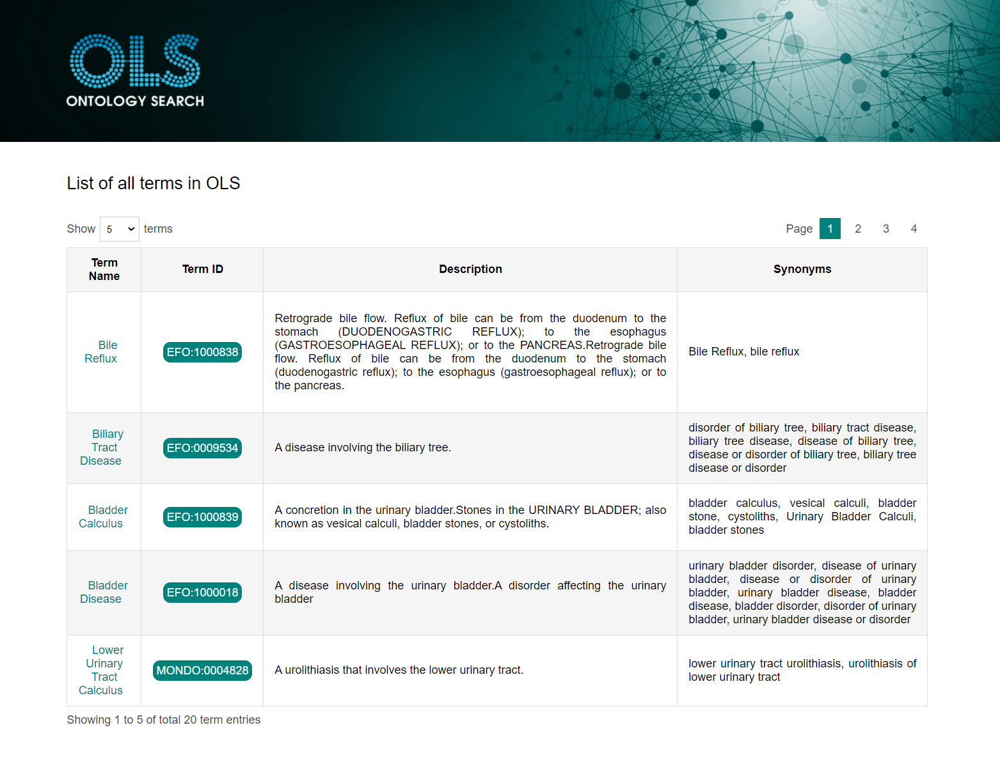
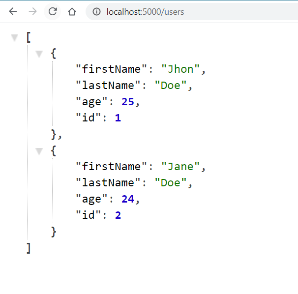

Welcome to my Portfolio page. I am Stergios, a SW Engineer passionate about web programming.
I like to work with rapid-changing Front-end technologies and Frameworks and to discover new
and more efficient ways to create web applications and user interfaces.
Feel free to look around, visit the Netlify links and contact me (via linkedIn or email)
to grant you access to the private gitHub repos.

This mobile-friendly React web application implements the funcionality of an E-commerce shop,
with a functioning shopping cart, Checkout form and Card payment via Stripe. It uses Material UI
for styling, Commerce.js for Back-end purposes and stripe-js for payments.

This mobile-friendly React web application retrieves Covid-19 Pandemic Data from a Covid-19 Api
and displays them in charts with the help of Charts.js and Material UI.

This mobile-friendly React web application retrieves Ontology terms from the Ontology Lookup Service repository
(Api) and displays them in a dynamic Table using pagination and custom styling. It was developed using only
React, Javascript ES6, CSS and Media Queries (and no other UI library or components) as an assessment.

This simple landing page has been styled using Sass to showcase its power.

This simple Back-end project uses Node.js and Express.js to perform CRUD actions : Display all users,
display single user, create new user, update existing user and delete user.